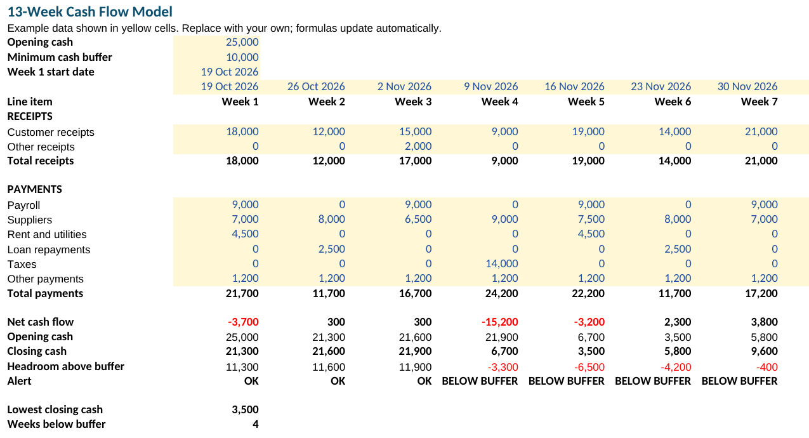
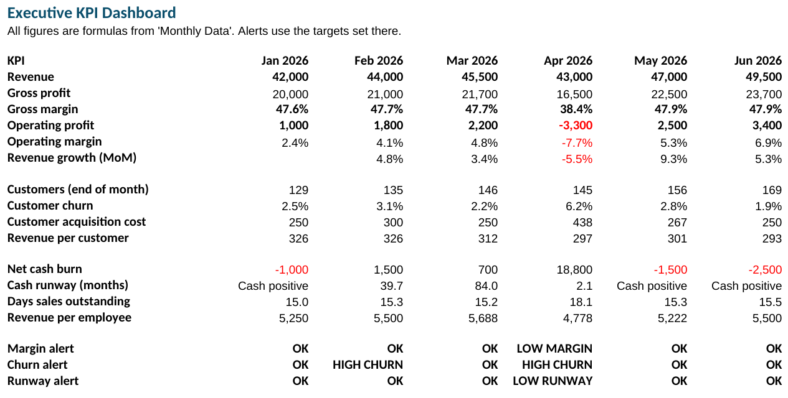

Spreadsheets that warn you before the numbers go wrong.
Two Excel templates for owners, managers and bookkeepers of small businesses: a 13-week cash flow forecast and a 12-month KPI dashboard. Both flag problems automatically, and every formula is checked before release.
Template 1
13-Week Cash Flow Model


What it does
- Rolls cash forward week by week: opening cash, receipts, payments, closing cash.
- Marks every week below your minimum cash buffer as BELOW BUFFER and counts them.
- Shows your lowest cash point and your headroom above the buffer each week.
- Dates each week from one start date; totals every line across 13 weeks.
- Yellow cells are inputs; everything else calculates. Includes a "How to use" sheet.
Template 2
Executive KPI Dashboard


What it does
- Enter nine monthly figures; it calculates revenue, gross and operating margin, growth, customers, churn, acquisition cost, cash burn, runway, days sales outstanding and revenue per employee.
- Three alerts against targets you set: LOW MARGIN, HIGH CHURN, LOW RUNWAY.
- A year-to-date summary with the number of months each alert fired.
- Prints on one landscape page. Includes a "How to use" sheet.
Both templates
The cash flow model tells you which week cash runs short; the dashboard tells you whether the business underneath is healthy. Together they cover the two questions an owner checks most.
$39 for both
Available soonHow each file is checked
Before release, every formula is recalculated in LibreOffice and compared with a separate, independent calculation: all 13 weeks of the cash flow model, and all 17 measures across 12 months of the dashboard. The printed layout is checked page by page.
Licence
Use in one business: yours, or one client's if you are an adviser. Please don't resell or redistribute the files.
Refunds
If a file doesn't open or calculate correctly in Microsoft Excel or LibreOffice, you get a full refund within 14 days of purchase.
Questions
- Which currency?
- Any. The figures carry no currency symbol.
- Can I add rows?
- Yes. Insert rows inside a block and the totals include them.
- Can I change the number of weeks?
- The cash flow model is built for 13 weeks, a standard quarter for this kind of forecast.
- Is this financial advice?
- No. These are planning tools. Check your figures with your accountant.
- How do I get the file?
- You download it right after payment.